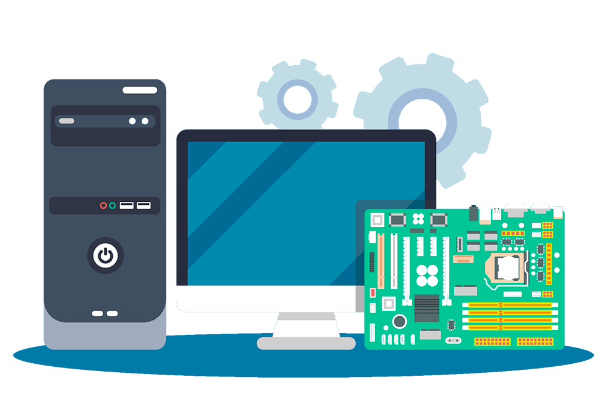

Objetivos de la auditoría de sistemas

Realizar una evaluación con personal multidisciplinario y capacitado en el área de sistemas
Emitir dictamenes independientes sobre:
- ⏣ La razonabilidad de las operaciones del sistema
- ⏣ La gestión administrativa del área de informática

Hacer una evaluación sobre el uso de los recursos financieros
- ⏣ Áreas del centro de información
- ⏣ Aprovechamiento del sistema computacional
- ⏣ Equipos periféricos e instalaciones

Evaluar el uso y aprovechamiento de los equipos de cómputo
- ⏣ Los periféricos
- ⏣ Las instalaciones
- ⏣ Mobiliario del centro de cómputo
- ⏣ Uso de sus recursos técnicos y materiales para el procesamiento de información

Evaluar el aprovechamiento de los sistemas de procesamiento
- ⏣ Sistemas operativos
- ⏣ Los lenguajes
- ⏣ Programas
- ⏣ Paqueterías de aplicación y desarrollo
- ⏣ El desarrollo e instalación de nuevos sistemas
Evaluar los cumplimientos
- ⏣ Planes y Programas
- ⏣ Estándares
- ⏣ Políticas, normas y lineamientos que regulan las funciones y actividades de las áreas
- ⏣ Los sistemas de procesamiento de información, así como de su personal y de los usuarios del centro de información
Realizar la evaluación de las áreas, actividades y funciones de la empresa
Contando con el apoyo de:
- ⏣ Los sistemas computacionales
- ⏣ Los programas especiales para auditoría
- ⏣ La paquetería que sirve de soporte para el desarrollo de auditorías por medio de la computadora